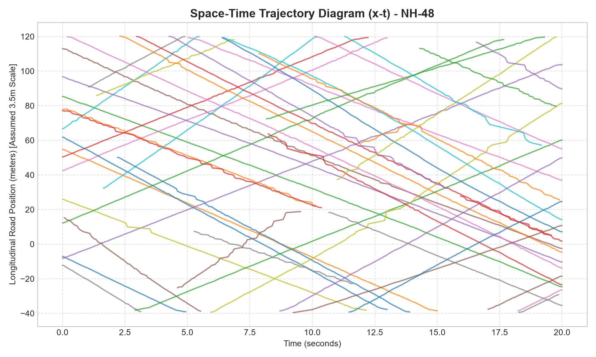
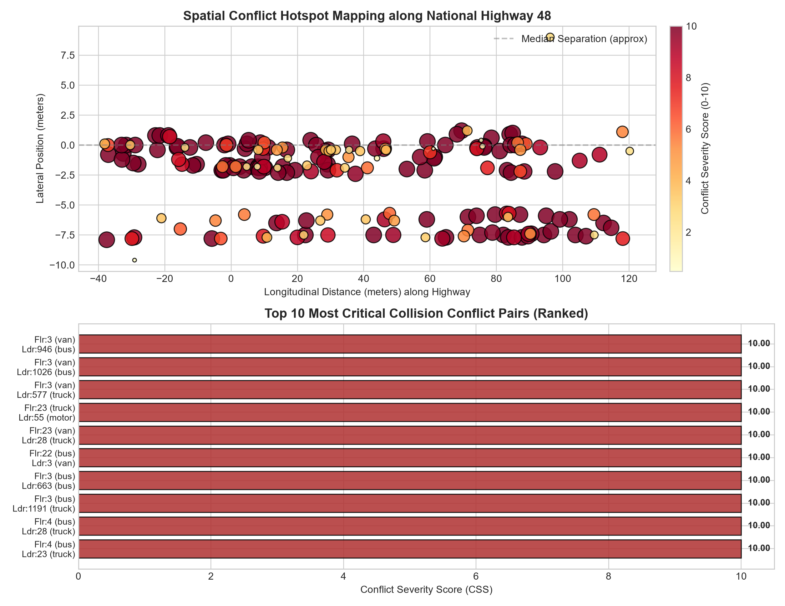
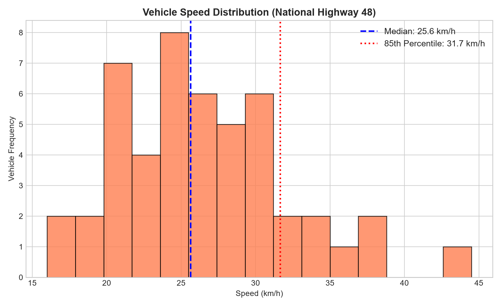
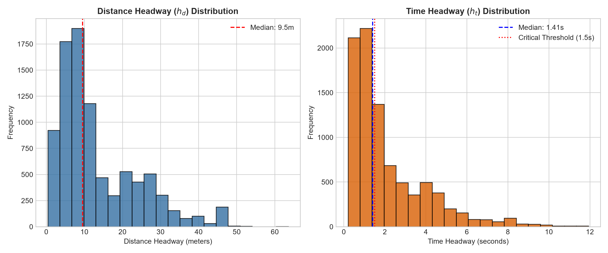
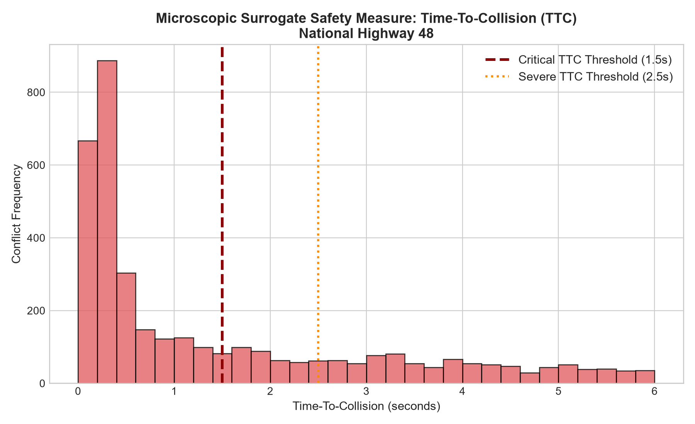
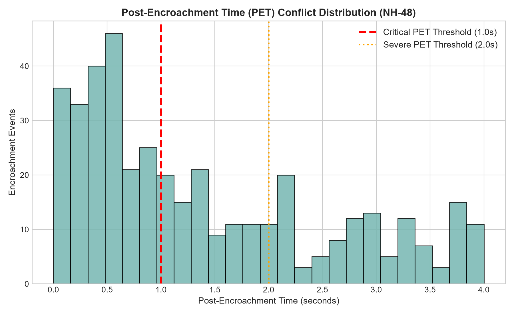
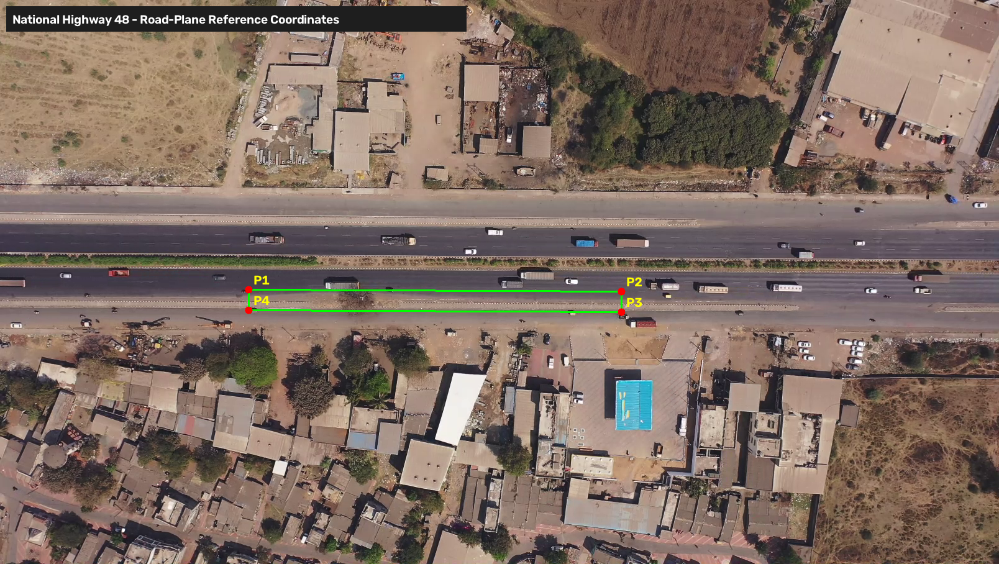

Traffic Volume & Classification
Fleet ShareEmpirical modal breakdown of active moving vehicles captured along the highway corridor.
Operating Speed & Flow Dynamics
KinematicsSpace and time velocity parameters computed using calibrated planar homography.
Surrogate Safety & Conflict Risk
Risk EvaluatedContinuous microscopic conflict events evaluated from vehicular trajectory tracking.
Space-Time (x-t) Trajectory Profiles
Vehicle trajectories moving along the 160m corridor over time. Positive slopes represent Eastbound; negative represent Westbound.

Spatial Conflict Hotspots & Crash Ranking
Spatial density mapping of conflict events identifying high-risk tailgating and emergency deceleration zones.

Traffic Fleet Composition
5 ClassesMean Speed by Vehicle Class
km/hMacroscopic Fundamental Parameters
ValidatedVehicle Speed Frequency Distribution

Distance & Time Headway Distributions

Time-To-Collision (TTC)
FollowingMeasures time remaining before rear-end collision under prevailing speeds: TTC = Δd / Δv.
Post-Encroachment Time (PET)
EncroachmentTime gap between preceding vehicle exiting a cell and trailing vehicle entering it.
Deceleration Demand (DRAC)
BrakingDeceleration rate required to prevent collision: DRAC = (Δv)² / (2 • Δd).
TTC Distribution (1.5s Critical Threshold)

PET Distribution (1.0s Encroachment Threshold)

Spatial Conflict Hotspots Map & Severity Ranking
Risk Tier Distribution
Conflict pairs categorized by surrogate crash probability score.
Evaluated Collision Conflict Pairs (195 Evaluated Pairs)
Interactive sorting and filtering of microscopic collision risks ranked by composite severity score.
| Rank | Follower | Leader | Direction | Min TTC | Max DRAC | Closing Speed | Location X | Severity | Risk Tier |
|---|
Corridor Boundary & Road Coordinates
Reference UAV video frame highlighting quadrilateral highway road-plane boundaries.

Ortho-Rectified Bird's-Eye View
Planar top-down orthogonal highway projection displaying 10-meter metric grid intervals.
Planar Homography Transformation Matrix (H)
Transforms 2D image coordinates (u, v) into planar real-world metric highway space (X, Y) via perspective projection.
Modular End-to-End UAV Traffic Processing Pipeline
Fully integrated 7-stage ITS pipeline: Video → Calibration → Detection → Tracking → Kinematics → SSMs → Dashboard.
Pipeline Execution Parameters
Run the complete pipeline on any UAV highway video with custom road calibration parameters.